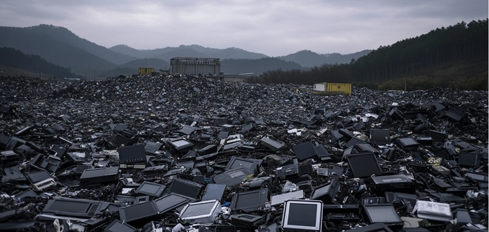
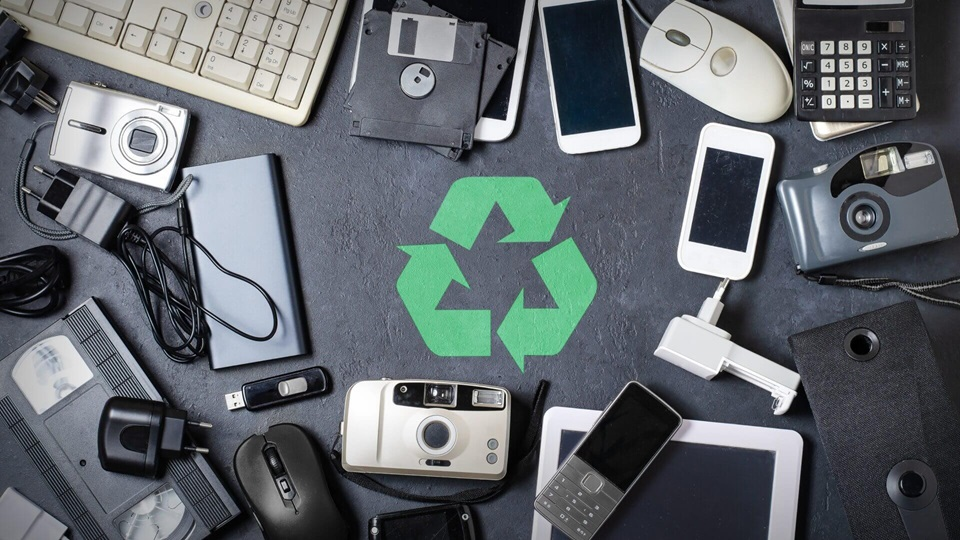
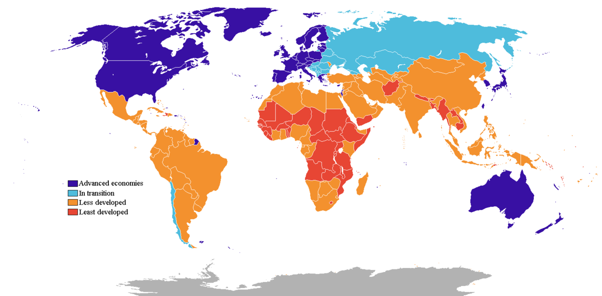
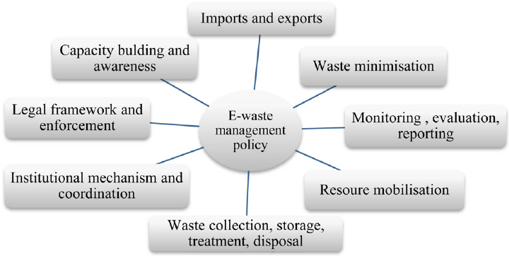

About
About Me
I am a freshman student at the University of Maryland - College Park. My major is Computer Science, and I think it is a good experience for me to have got the chance to design a website. This website was created in order to finish the project for the UMD’s English 101X Course. The sole purpose of this site is to appeal governments in developed countries to have a common policy for treating E-waste.
Why this project
As someone who is concerned about environmental protection, I am particularly interested in e-waste disposal. The replacement rate of electronic equipment is getting faster and faster, and how to deal with these wastes poses a serious challenge to environmental protection. This topic is very important to me because it relates to sustainable development and the protection of the ecological environment.
Introduction
Do you have old computers or old phones? Do you recycle them? Do you know how your country deals with old electronic products? When it comes to the topic of electronic waste, most of us will readily agree that improperly treating electronic waste would cause problems of environment and human health. Where this agreement usually ends, however, is on the question of how to treat it properly. Whereas some are convinced that government policies should change, others maintain that everyone should perform better. Also, people holds different opinions about how policies should change.
Definition of E-Waste
According to Vojnic, “Electronic waste, or e-waste, refers to discarded electrical and electronic equipment (EEE) that have reached the end of their useful life.” The problem of treating e-waste began as technology develops. New products are continually being developed, and old devices are replaced in short periods.
Current Methods
According to Recycling-inside website, there are several ways to treat e-waste. According to many resources, it is generally believed that recycling or reusing is the most environmentally-friendly way. As Ahirwar said, E-waste recycling comprises three steps, collection of e-waste, its processing, and recovery of valuable materials. As a result, there will be no harmful substance which is released. However, nowadays, the recycling rate of e-waste is pretty low. According to Igini, “only 22.3% of the total electronic waste generated in 2022 was documented as formally collected and recycled in an environmentally sound manner”. Than means most of the e-waste is processed improperly, such as burning, landfilling, and acid bath. Burning releases toxic fumes, contributing to air pollution and increase greenhouse gas. According to TechReset website, when e-waste is disposed of by landfilling, heavy metals such as lead and mercury can fill into soil. This contaminates the ground and can harm plant and animal life.
Find the Best Way to Improve
Therefore, it is emergently and significantly to find a method to improve recycling rate for both the environment and out health. People holds different perspectives of how to improve recycling rate. They have conflicts in between big directions and specific details. Some people think governments do not need to change policies because it costs a lot to change laws. Corporations and everyone should put the old electronic products to recycling station. Others believe government policies must be changed. Among them, some expect all countries should pay the same efforts, and some deem developed countries should bear more burden. Some believe countries can remain do their own thing, and others suggest they should have a common policy. To understand why governments of developed government must have a common policy, we will first examine why government need to change policy. Second, we will consider the possibility of changing developing countries’ behavior. Finally, we will analyze the effect of changing every government’s policy independently to address e-waste pollution. In so doing, we will establish that developed countries with a common policy is the best course of action.
Why need More Policies
Some countries have already had some policies about e-waste. Grandhi claims that Europe Union have WEEE directive, Germany has Extended Producer responsibility, Sweden has Producer responsibility with fees, and so on. Nevertheless, they are not enough. We need more policies, and we need changes. The reason is that if they are useful, the current recycling rate will not be lower than 25%. The most terrible thing is that some countries doing bad jobs at regulating recycling e-waste, but they are even proud of that. According to CompuCycle website, there are no federal laws that require electronics recycling in US. Only 25 states and the District of Columbia have laws that regulate e-waste recycling. There are huge improvement space for some countries based on their poor regulations now.
Why Developed Countries
Developed countries produce much more electronic waste per capita than developing nations. Due to rapid technological advancements and frequent device upgrades, consumers in these countries generate enormous amounts of e-waste annually. For instance, the U.S. alone generates millions of tons of e-waste each year, contributing to a growing global crisis. With such high levels of consumption, developed countries have a responsibility to ensure that their discarded electronics are managed sustainably.
Many developed countries, including the U.S., export large quantities of e-waste to developing nations, where disposal practices may be unregulated or dangerous. An example is Ghana's Agbogbloshie, one of the world’s largest e-waste dumping sites. Much of the e-waste arriving in Agbogbloshie originates from the U.S. and Europe, transported under the guise of "second-hand electronics" but often containing irreparable devices. Workers in places like Agbogbloshie often extract metals by burning wires or breaking devices by hand, exposing themselves to hazardous chemicals like lead, mercury, and cadmium. This process not only harms workers' health but also pollutes the surrounding environment, impacting soil and water quality. By reducing exports and managing e-waste domestically, developed countries can prevent harmful exposure in these communities.
Developed countries generally have better access to resources, advanced recycling technologies, and regulatory infrastructure to manage e-waste safely. The U.S., for instance, has the financial resources to build state-of-the-art recycling facilities capable of processing e-waste without harming workers or the environment. Investing in these facilities would allow for the recovery of valuable metals like gold and copper, creating economic incentives while also reducing the need to mine raw materials. Additionally, developed nations can afford to innovate and share best practices that could be implemented globally.
Most major electronics manufacturers are based in developed countries. By enforcing extended producer responsibility (EPR), developed nations can shift some of the responsibility for e-waste management back to manufacturers. EPR policies could require companies to design products with longer lifespans, easier repairability, and recyclability, minimizing waste from the start. When companies take responsibility for the end-of-life management of their products, they contribute to a circular economy, reducing the environmental burden of e-waste and encouraging sustainable product design.
As leaders in global technology and policy, developed nations have the opportunity to set high standards for e-waste management that others can follow. By establishing strict guidelines on e-waste disposal and recycling, countries like the U.S. and EU members can encourage responsible practices worldwide. Developed countries could also support developing nations in building sustainable waste management systems by providing technical and financial assistance. For example, the Basel Convention—an international treaty that restricts the movement of hazardous waste from developed to developing countries—aims to control e-waste exports. If major contributors like the U.S. commit to such international agreements and enforce stricter policies, they can influence broader global standards.
Why common Policies
A unified policy would create consistent standards for e-waste treatment, recycling, and disposal across countries. This would eliminate discrepancies in how e-waste is managed, ensuring that all e-waste is processed at a high standard regardless of its origin. It would reduce the current inconsistencies where some countries enforce stricter regulations than others, leading to safer and more effective handling of toxic materials like lead, mercury, and cadmium found in electronics.
With different policies, developed countries sometimes shift the burden of e-waste to nations with looser regulations, especially in developing regions. A common policy would make it harder to exploit such loopholes, reducing the exportation of e-waste to countries that lack the infrastructure to manage it safely. Instead, a shared commitment would encourage in-country recycling and treatment, reducing environmental and health risks for communities in developing nations where much of this waste currently ends up.
Developing unified systems and technologies across multiple countries can lower the costs of processing e-waste. If developed countries work together, they can share research and innovations, invest in large-scale recycling facilities, and improve efficiency in reclaiming valuable metals like gold, copper, and silver from old electronics. Shared investments in advanced technologies could also increase the recycling rates of non-precious materials, making e-waste treatment more economical.
Electronics manufacturers and other stakeholders that produce and distribute devices internationally would face uniform requirements for waste management. A common policy could enforce extended producer responsibility (EPR) globally, encouraging companies to take ownership of e-waste management wherever their products are sold. This would incentivize manufacturers to design products that are easier to repair, refurbish, or recycle, fostering a more circular economy and reducing the overall amount of e-waste produced.
A common policy would signal a strong, unified commitment from developed countries to address e-waste and support sustainability. This collective stance would help set a global standard, pressuring other nations to improve their own practices and follow responsible guidelines. As e-waste is a growing global issue with cross-border environmental impacts, such as air and water pollution from improperly handled waste, a joint effort could lead to international treaties and policies that mitigate these effects more effectively than isolated efforts.
A shared policy would enable more transparent tracking and reporting of e-waste volumes and their treatment outcomes. Countries would have a common framework for measuring and reporting their progress, making it easier to hold each other accountable and avoid "greenwashing" or superficial compliance. Regular evaluations and international reviews would help maintain high standards and ensure that all countries are meeting agreed-upon goals.
Conclusion
Now, you know what to do. Every one should make an effort on recycling their EEE to help one’s country and government. If the bad effect of improperly treating e-waste is more and more severe, it would affect the air, land, and climate. Now, the temperature of evening in autumn can be 70 Fahrenheit degree. You do not want a 70 degree winter night, right? Therefore, it is needed to do everyone’s best and appeal government to make changes.
Further Reading
- E-waste management: A review of recycling process, environmental and occupational health hazards, and potential solutions
- E-Wastefulness: Unsustainable Electronic Waste Policies.
- Toward a more sustainable trajectory for e-waste policy: a review of a decade of e-waste research in Accra, Ghana.
- Electronic Disposal Laws
- E-waste Disposal Techniques
- Policy pathways to sustainable E-waste management: A global review.
- An integrated approach to establish e-waste management systems for developing countries
- A review of current progress of supercritical fluid technologies for e- waste treatment
- Is environmental regulation keeping e-waste under control? Evidence from e-waste exports in the European Union
- Overview of electronic waste (e-waste) management practices and legislations, and their poor applications in the developing countries
- E-waste management and its effects on the environment and human health
- Handling e-waste in developed and developing countries: Initiatives, practices, and consequences.
- Global perspectives on e-waste